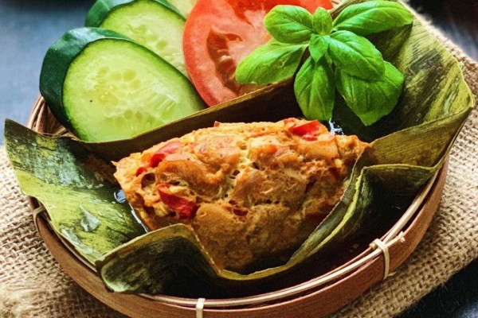

Makanan Bali

Makanan khas bali dan Badung
Tahukah kalian. di Bali khususnya di daerah badung, sangat banyak dapat ditemui makanan khas bali yang sudah sangat terkenal. Berikut adalah makanan khas bali yang sangat direkomend untuk anda yang baru pertama kali ke Bali
1.Ayam betutu
Ayam Betutu adalah makanan tradisional khas Bali yang terbuat dari ayam atau bebek utuh yang berisi bumbu, kemudian dipanggang dalam api sekam. Ayam betutu merupakan jenis lauk pauk yang dibuat dari daging ayam yang telah dibersihkan, kemudian dibalurkan bumbu khas Bali yang dikenal dengan "base genep"[1] di seluruh permukaan daging ayam dan sebagian lagi dimasukkan ke dalam rongga abdomennya. Daging ayam yang telah dibumbui kemudian direbus atau langsung dibakar hingga menghasilkan aroma yang khas. Aroma yang muncul disebabkan karena adanya pemanasan yang menyebabkan air dan lemak daging ikut menguap. Semakin banyak uap yang dihasilkan, semakin kuat dan enak aromanya
2.Sate lilit
Sate Lilit adalah sebuah varian sate asal Bali.[1] Sate ini terbuat dari daging babi, ikan, ayam, daging sapi, atau bahkan kura-kura yang dicincang, kemudian dicampur dengan parutan kelapa, santan, jeruk nipis, bawang merah, dan merica. Daging cincang yang telah berbumbu dilekatkan pada sebuah bambu atau tebu, kemudian dipanggang di atas arang. Tidak seperti sate lainnya yang dibuat dengan tusuk sate yang sempit dan tajam, tusuk sate lilit berbentuk datar dan lebar. Permukaan yang lebih luas memungkinkan daging cincang untuk melekat. Istilah lilit dalam bahasa Bali dan Indonesia berarti "membungkus", yang sesuai untuk cara pembuatan sate ini.
3.Laklak
Laklak adalah sebuah makanan yang berasal dari Bali. Makanan tersebut terbuat dari tepung beras, air panas, santan panas, air daun suji, baking powder, garam, kelapa parut, serta saus gula merah yang terbuat dari gula merah, gula pasir dan air mineral.
4.Tum ayam

Tum ayam adalah hidangan yang menggabungkan cita rasa daging ayam yang lezat dengan keharuman bumbu-bumbu aromatik. Dengan cara penyajian yang unik dalam bungkusan daun pisang, Tum Ayam menjadi hidangan yang istimewa dan enak untuk dinikmati. Selamat menikmati Tum Ayam yang menggugah selera
5.Ikan laut sambal mentah
Sedangkan di badung memiliki makanan khas yaitu ikan laut sambal mentah. Makanan ini terbuat dari ikan laut segar, yang dilaburi dengan bumbu bawang putih, ketumbar, kunyit, terasi, garam dan kadang-kadang dengan kencur. Setelah bumbu ikannya meresap, lalu dipanggang dengan arang kayu atau arang batok kelapa. Adapun bahan sambalnya terdiri atas bawang merah, cabai rawit, sereh, terasi bakar, garam, dan bisa juga ditambahkan cabai besar untuk memberi tambahan rasa. Bahan-bahan tersebut dicampur, dirajang halus, lalu diremas-remas untuk menyatukan rasa. Terakhir, ditambahkan minyak kelapa asli dan air perasan jeruk limau.